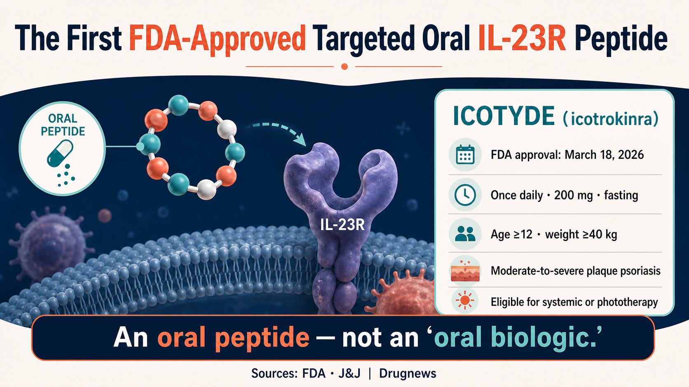
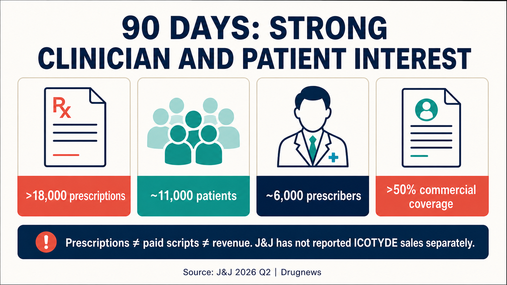
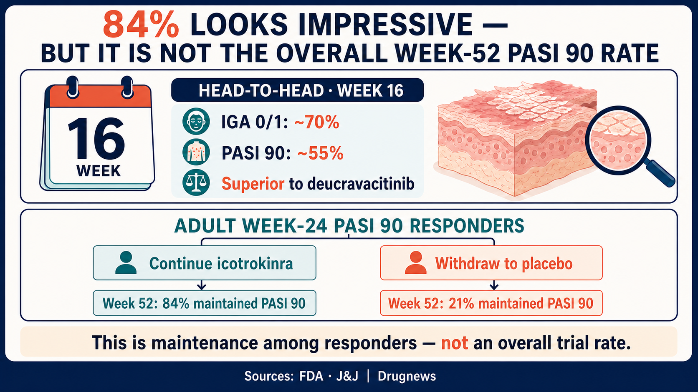
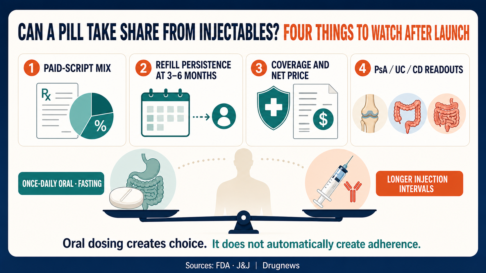

What patients with psoriasis want is not especially complicated: skin that clears well, a response that lasts, and, if possible, less dependence on injections.
Share this analysis
Send this article to readers who follow biotech, company strategy, and capital-market signals.
The problem has been that those three goals have rarely arrived in the same package.
Oral therapies are convenient, but their efficacy has often remained below that of injectable IL-23 and IL-17 biologics. Injectable biologics can deliver high levels of skin clearance, yet they bring needles, clinic or training requirements, storage considerations, and the burden of long-term treatment. The market has never doubted that many patients prefer pills. Preference, however, is not the same as willingness to trade away efficacy.
On March 18, 2026, the US Food and Drug Administration approved Johnson & Johnson's ICOTYDE (icotrokinra). It is the first and, as of the date of our review, only FDA-approved targeted oral peptide that directly blocks the interleukin-23 receptor. The label covers patients aged 12 years or older who weigh at least 40 kilograms and have moderate-to-severe plaque psoriasis suitable for systemic therapy or phototherapy.
In its first full quarter on the market, J&J reported more than 18,000 prescriptions, approximately 11,000 patients treated, and roughly 6,000 prescribers. Those figures moved “oral IL-23” from a clinical-development story into a commercial launch that deserves close attention.
But Drugnews' central judgment is not that an “oral biologic” has already disrupted psoriasis.
The threshold ICOTYDE has crossed is more specific: it has earned oral therapy a place in the high-efficacy conversation. More than 18,000 prescriptions show that demand has been activated. They do not yet prove that refills, net reimbursement, and long-term persistence can sustain a commercial success.
The pill has earned a seat at the table. It has not yet taken the injectables' meal.
First, Name It Correctly: An Oral Peptide, Not an “Oral Biologic”
ICOTYDE's generic name is icotrokinra. The labeled dose is 200 mg once daily, taken on an empty stomach. The molecule blocks IL-23R and inhibits downstream signaling associated with psoriatic inflammation.
J&J and the FDA describe it as a targeted oral peptide. That terminology matters.
Calling ICOTYDE an “oral biologic” creates an intuitive image, but it is not the precise regulatory description. ICOTYDE is an oral peptide drug. It is not an injectable monoclonal antibody placed inside a capsule, and the FDA did not approve it as a biologic under a biologics license application.
The industrial significance lies elsewhere. Peptides are generally larger than conventional small molecules and face gastrointestinal degradation, stability, and absorption barriers when administered orally. At the same time, their binding surfaces can create target opportunities that differ from those available to traditional small molecules. ICOTYDE demonstrates that, for at least one molecule, one target, one dose, and one therapeutic window, direct IL-23R inhibition can be delivered orally.
That does not mean every macromolecule can now be “made oral,” nor does it mean ICOTYDE automatically combines every advantage associated with antibodies. Public commentary can easily overreach by attaching an elegant slogan to an unverified account of disulfide bonds, permeation enhancers, membrane transport, or half-life engineering. Unless those details can be traced to a formal regulatory review or primary scientific publication, they should not be used to explain why the clinical program succeeded.
For patients, the decisive question is not what category sounds most impressive. It is whether one daily tablet can maintain skin clearance for one year, two years, and beyond while preserving an acceptable safety profile.

More Than 18,000 Prescriptions Is Fast—But It Is Not 18,000 Paying Patients
On J&J's second-quarter 2026 earnings call, management reported more than 18,000 ICOTYDE prescriptions, approximately 11,000 patients, and roughly 6,000 prescribers since launch. More than half of the prescribers were advanced practice providers, while approximately 40% were dermatologists. Within 90 days, US commercial insurance coverage exceeded 50%.
Those numbers tell us at least three things.
First, clinicians are willing to try the product. Participation from roughly 6,000 prescribers suggests that early product education and adoption have extended beyond a very narrow group of specialists.
Second, demand for an oral, high-efficacy option is real. The relationship between approximately 11,000 patients and more than 18,000 prescriptions indicates that some repeat prescribing had already begun. It would still be wrong to divide the two figures, obtain roughly 1.6 prescriptions per patient, and declare adherence proven. Prescription volume can include initial orders, refills, prescriptions that were never dispensed, free-trial supply, or patient-assistance programs. The public disclosure does not separate those categories.
Third, payer access did not start slowly. Commercial coverage above 50% within 90 days can help move a prescription from the clinician's screen to medicine in a patient's hands. But coverage is not the same as unconditional payment. The figure does not disclose prior-authorization requirements, step edits, patient out-of-pocket costs, rebates, or the share of prescriptions that became paid claims.
That is why more than 18,000 prescriptions cannot be translated directly into sales success. J&J did not report ICOTYDE revenue separately in its second-quarter results, and the earnings call did not provide a complete breakdown of free samples, assistance programs, or commercially paid prescriptions.
A newly launched drug can build a large prescription count quickly through trials, samples, launch education, and access support. Commercial value depends on what happens three to six months later: how many patients continue to obtain the drug, whether payer access expands, and whether the net price remains durable under competition.
The opening is strong. The scorecard is not finished.

The Threshold It Crossed Was Efficacy Credibility, Not Convenience
Oral psoriasis drugs have never lacked the benefit of avoiding injections. What they have lacked is evidence strong enough to place them confidently in a high-efficacy treatment sequence.
ICOTYDE was compared directly with deucravacitinib in the head-to-head ICONIC-ADVANCE program. According to J&J's approval announcement, approximately 70% of patients receiving ICOTYDE achieved an Investigator's Global Assessment score of 0 or 1 at week 16, meaning clear or almost-clear skin. About 55% achieved PASI 90. Both outcomes were superior to the comparator.
This is not a comparison assembled from separate trial presentations. The treatments were evaluated within the same head-to-head program, which makes the result more informative than placing percentages from unrelated studies side by side.
The one-year data addressed a different question: can a strong response be maintained?
J&J's 2025 results showed that adult patients who had achieved PASI 90 at week 24 were rerandomized. Among those who continued icotrokinra, 84% maintained PASI 90 through week 52. Among those switched to placebo, 21% maintained that response.
The 84% figure is easy to misuse.
It does not mean that 84% of every patient who started ICOTYDE achieved PASI 90 at week 52. It is the maintenance rate in the continued-treatment group after the denominator had already been restricted to adult week-24 PASI 90 responders and those responders had been rerandomized. The placebo-switch result also underscores the role of continued treatment in maintaining response.
Separate one-year results reported PASI 100 rates of approximately 49% and 48% at week 52 in two studies. Those findings support the possibility of complete skin clearance lasting through one year, but each percentage still has to be interpreted within its own study population and analysis.
Some commentary has placed the 84% maintenance figure next to an 82% figure from a Skyrizi study and concluded that an oral medicine has matched a leading monoclonal antibody. That comparison is not methodologically valid. The 84% denominator consists of week-24 responders who continued treatment; the other number comes from a different trial and a different analytical population. Percentages that appear only two points apart can be answering entirely different questions.
A more defensible conclusion is that ICOTYDE has raised the efficacy credibility of oral psoriasis therapy. It outperformed deucravacitinib head to head, and one-year data support maintenance of response. Whether it can displace established injectable IL-23 therapies at scale will require real-world persistence, longer-term safety, reimbursement evidence, and appropriately designed direct comparisons.

One Tablet a Day Does Not Automatically Create an Adherence Revolution
“Oral” is often treated as a synonym for “better adherence.” It is not.
The disadvantages of injectable biologics are easy to understand: needle aversion, training or healthcare visits, and storage requirements for some products. Yet biologics may be administered only every several weeks or longer, so patients do not have to remember a treatment every day.
ICOTYDE is taken once daily, and its label requires administration on an empty stomach. For some patients, that routine will be easier than an injection. For others—particularly people with irregular schedules, extensive polypharmacy, or difficulty coordinating meals and medication—a daily fasting requirement may create a new form of friction.
Real adherence therefore has to be measured through persistence, not assumed from the dosage form. Refill rates, reasons for discontinuation, missed doses, treatment satisfaction, maintenance of skin clearance, and interruptions caused by insurance are the metrics that can answer the question after launch.
Safety also cannot be summarized as “better than conventional small molecules.” The FDA label includes infection-related precautions, calls for tuberculosis risk evaluation before treatment, and contains guidance on immunization and other use considerations. ICOTYDE does not carry the same boxed-warning framework associated with JAK inhibitors, but that distinction does not mean it is free of immune-related risk.
Making administration simpler does not turn medical decision-making into “take it whenever you want.” Choice and monitoring still belong with the treating clinical team.
The More-Than-$5-Billion Story Depends on Multiple Indications
J&J has identified ICOTYDE as an asset with more than $5 billion in potential. That figure is attention-grabbing, but its scope has to remain explicit. It is a company expectation for a multi-indication asset. It is not current sales, not second-quarter revenue, and not a psoriasis-only peak estimate that has already been validated.
As of July 15, 2026, J&J's development pipeline listed icotrokinra in phase 3 for psoriatic arthritis and ulcerative colitis, and in phase 2 for Crohn's disease. If those programs succeed, the commercial opportunity for oral IL-23R inhibition could extend from dermatology into rheumatology and gastroenterology.
Psoriasis efficacy cannot simply be copied into those indications. Disease biology, endpoints, background therapy, competitors, and payer logic differ. Sharing the IL-23 pathway does not guarantee that every trial will succeed.
ICOTYDE will not grow in a competitive vacuum either. Established injectable IL-23 and IL-17 biologics already have long-term data, physician familiarity, and payer contracts. Other oral small molecules and oral peptides are also advancing. ICOTYDE must prove efficacy, convenience, safety, and reimbursement at the same time. Weakness in any one dimension could reduce the momentum visible at launch.
The commercial question is therefore not whether pills inevitably defeat injections. It is which patients will switch, at what point in their care, and whether they remain on treatment after switching.
From a valuation perspective, we would separate the opportunity into distinct layers rather than capitalize the entire $5 billion at once:
- Psoriasis persistence: How much prescription volume becomes paid claims, and how many patients remain on treatment after six months?
- Payer quality: Does broader coverage require aggressive rebates or restrictive utilization controls, and can net price remain durable?
- Indication-specific probability: Psoriatic arthritis, ulcerative colitis, and Crohn's disease each require their own probability of clinical and commercial success.
Prescriber composition is another useful signal. More than half of the approximately 6,000 reported prescribers were advanced practice providers, while about 40% were dermatologists. If growth broadens across care settings while refills also rise, the oral formulation may be expanding the reachable patient population. If prescriptions remain concentrated around launch promotion and both new prescribers and refills slow, aggressive penetration assumptions should come down. Prescription, patient, and prescriber counts need to be interpreted together; any one figure can mistake initial trial interest for durable demand.
One Product Has Been Validated—Not Every Oral Peptide Platform
ICOTYDE's approval will encourage further investment in oral peptides. That is a reasonable industry inference. It would still be a mistake to turn one product's approval into proof that every oral macromolecule platform has been validated.
Each peptide has its own stability, absorption, exposure, target affinity, therapeutic window, dose requirements, and manufacturing constraints. Cardiovascular, metabolic, and autoimmune diseases can require very different exposure profiles. Oral semaglutide demonstrated that certain peptides can be commercialized orally; ICOTYDE adds a successful example built around another molecule and target. These cases show that a route exists. They do not show that every route is equivalent.
It is tempting to bundle multiple partnerships, unapproved companies, different formulation technologies, and nearby news events into a story about an imminent “oral biologics boom.” The narrative becomes exciting, but it can obscure the variables that actually matter for ICOTYDE. Different mechanisms, dosage forms, dates, development stages, and second-hand transaction values should not be combined as if they were one clinical or commercial dataset.
For this product, four measures are sufficient for now: paid prescriptions, refill persistence, the quality of insurance coverage, and efficacy and safety beyond one year. Only after those measures hold up does broader platform spillover become a serious commercial claim.

What Should Taiwan-Based Readers Watch Next?
First, watch the quality of prescriptions, not only the total. If J&J begins to disclose net sales, paid prescriptions, refill rates, and payer detail, investors will be able to estimate how much of the first 18,000 prescriptions converted into sustainable revenue.
Second, watch persistence beyond week 52. Whether once-daily fasting administration remains workable in the real world cannot be answered by launch enthusiasm alone.
Third, follow psoriatic arthritis, ulcerative colitis, and Crohn's disease separately. The more-than-$5-billion narrative requires success across indications; psoriasis does not automatically deliver the entire opportunity.
Fourth, keep Taiwan's regulatory and access boundaries clear. FDA approval in the United States does not mean that the product has been approved, launched, or reimbursed in Taiwan. Patients should not stop or switch treatment because of a foreign launch report.
The most direct listed-company exposure discussed in this article is Johnson & Johnson (NYSE: JNJ). As of our review date, we found no verified direct role for a Taiwan-listed company in ICOTYDE's product rights, core manufacturing, pivotal clinical program, or commercialization. A “concept stock” label would therefore go beyond the evidence.
Formosa Laboratories (4746) can be used as a reference point for Taiwan's peptide capabilities. Its public website lists solid-phase peptide synthesis, automated microwave synthesis, purification, and peptide sequence analysis. Those capabilities are relevant when mapping Taiwan's peptide manufacturing and analytical infrastructure. They do not establish that Formosa Laboratories supplies ICOTYDE, owns icotrokinra's oral-absorption platform, or holds any commercial rights. Stock code 4746 is a capability coordinate, not a direct ICOTYDE beneficiary.
If a Taiwan company later discloses a verified role in licensing, active pharmaceutical ingredient supply, formulation, clinical development, or commercialization, that role can be assessed on its own evidence. Until then, technical similarity should not be rewritten as a revenue relationship.
Final Takeaway
ICOTYDE's importance is not that it provides another example of patients preferring pills. The market already knew that.
What has changed is that an oral therapy no longer has to compete on convenience alone. ICOTYDE has entered a high-efficacy territory historically dominated by injectable biologics with head-to-head data, one-year maintenance evidence, and precise IL-23R targeting.
But more than 18,000 prescriptions prove only that the market is willing to try the product. They do not prove that patients will remain on it, that insurers will keep paying, or that every new indication will succeed.
The pill has reached for the injectables' share. Whether it can take and keep that share will be decided by refills, reimbursement, and long-term outcomes—not by launch volume alone.
Primary Sources
- FDA prescribing information for ICOTYDE
- FDA multidisciplinary review
- J&J FDA approval announcement
- J&J 2025 PASI 90 maintenance and head-to-head results
- J&J one-year results
- J&J second-quarter 2026 results
- J&J second-quarter 2026 earnings call transcript
- J&J development pipeline
- Formosa Laboratories peptide synthesis and analytical capabilities
#JNJ #ICOTYDE #icotrokinra #psoriasis #IL23 #oralpeptide #TaiwanBiotech
Disclaimer
This article summarizes public medical and industry information. It is not medical diagnosis, treatment advice, or investment advice. US approval does not imply approval, launch, or reimbursement in Taiwan. Treatment decisions should be made by qualified healthcare professionals based on each patient's circumstances.
Cite this article
For decks, research notes, or media references, cite Drugnews with the canonical article URL.
Drugnews Editorial Team. "Can a Pill Take Share from Injectables? The ICOTYDE Commercial Test." Drugnews, Jul 26, 2026. https://drugnews.com.tw/articles/2026-07-26-icotyde-oral-il23r-launch-en.html